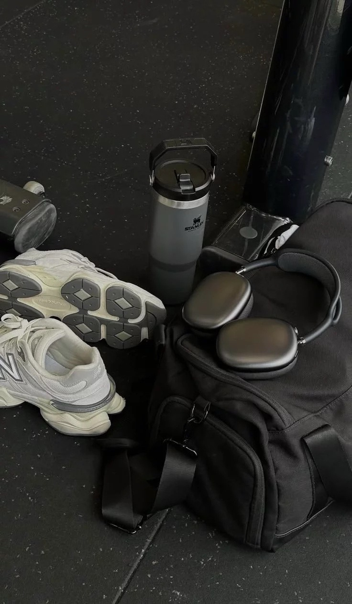

Физические упражнения
Движение необходимо человеку каждый день. Оно укрепляет сердце, мышцы, суставы и помогает поддерживать нормальный уровень энергии.
Не обязательно сразу заниматься профессиональным спортом. Для начала достаточно ходьбы, лёгкой зарядки, растяжки или простых домашних упражнений.
Тренажёрный зал помогает развивать силу, улучшать осанку и укреплять скелет тела за счёт нагрузки на мышцы и кости.

Где сжигается больше всего калорий?
Количество калорий зависит от веса человека, интенсивности и времени тренировки. Но некоторые виды активности обычно тратят больше энергии, чем спокойные упражнения.
| Вид спорта | Что развивает | Польза для тела |
|---|---|---|
| Бег | Выносливость | Сильно сжигает калории, укрепляет ноги и сердце |
| Плавание | Всё тело | Мягко нагружает суставы, укрепляет спину и плечи |
| Велосипед | Ноги и дыхание | Развивает выносливость и мышцы ног |
| Бокс | Реакцию и силу | Активно тратит энергию и улучшает координацию |
| Силовые тренировки | Мышцы и осанку | Хорошо влияют на скелет, мышцы, спину и стабильность тела |
Что лучше влияет на скелет тела?
Для укрепления костей и осанки особенно полезны силовые тренировки, упражнения с собственным весом, плавание и игровые виды спорта. Они помогают телу становиться крепче и устойчивее.
Силовые упражнения развивают мышцы вокруг позвоночника и суставов. Это помогает лучше держать осанку и снижает риск травм.
Плавание полезно для спины, потому что мышцы работают активно, но нагрузка на суставы мягче, чем при прыжках или беге.
Фитнес-зал
Фитнес-зал помогает тренироваться безопаснее и разнообразнее: можно укреплять мышцы, развивать выносливость и постепенно повышать нагрузку.
Новичкам лучше начинать с базовых упражнений: приседаний, жима, тяги, упражнений на пресс и лёгкой кардионагрузки.
Силовая зона
Тренажёры, гантели и штанги помогают укреплять мышцы и осанку.
Кардио
Беговая дорожка, велосипед и эллипс развивают сердце и выносливость.
Растяжка
Разминка и растяжка снижают риск травм и помогают восстановлению.
Программа упражнений на неделю
| День | Тренировка | Цель |
|---|---|---|
| Понедельник | Ноги, спина, пресс | Сила и осанка |
| Вторник | Кардио 25–30 минут | Выносливость |
| Среда | Отдых или прогулка | Восстановление |
| Четверг | Грудь, плечи, руки | Укрепление мышц |
| Пятница | Плавание, велосипед или бег | Кардио-нагрузка |
| Суббота | Упражнения с собственным весом | Тонус всего тела |
| Воскресенье | Растяжка и спокойная ходьба | Гибкость и отдых |
Правильный отдых после тренировок
Отдых нужен телу так же, как и сами тренировки. Во время восстановления мышцы укрепляются, снижается усталость и уменьшается риск травм.
Сон
7–9 часов сна помогают мышцам и нервной системе восстановиться.
Питание
Белок, сложные углеводы и вода помогают вернуть энергию.
Лёгкая активность
Прогулка и растяжка улучшают кровообращение без перегрузки.